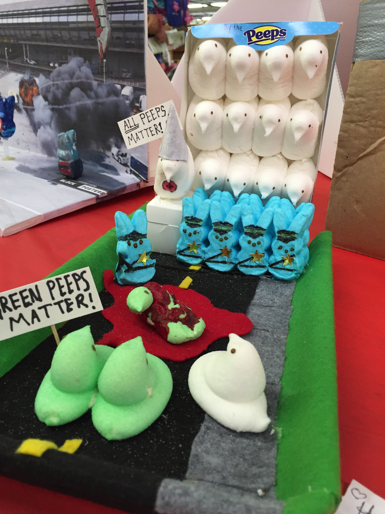

I've attended some great conferences; the ones where you come back all pumped up and full of new ideas. Conferences that had interesting speakers spreading new ideas, breakout sessions where you could get hands on experience with new an amazing things, and while the food may not be 5 star quality, it usually isn't too bad.
These conferences have set the bar in my head. Should I expect this level of mental engagement from an event like a county fair, or am I just the wrong target demographic for this type of event?

What did the approximately $40 I spent at the Denver county fair get me? Horrible overprice food (from mostly just one vendor), vendors trying to sell their sub-par products, uninteresting events (come see a cat with a half black face and a half white face.) , and uninspired "workshops" that seems to be thrown together at the last minute to get the check in box on the list of things your station needed.
If you look hard enough you can find some amusing things at the county fair. The differences between conference workshops, and county fair "workshops", are presentation and quality. At the conference workshop, you have guided instruction to learn something new. At the fair, they just dump a bunch of crayons on the table and tell you to go do "art". The major difference being, I don't need to go somewhere to get art materials handed to me; I have all those at home. I want a class that will show me how to use those materials in a way that I may not have thought to use them before.
If you are going to put on an event, first have a reason besides "We do it every year", and secondly look at the way conferences do it. Have actual content people want to see and participate in. Have actual food that isn't horrible wasted calories thrown together by some teenager dipping everything in bland batter and frying oil. Have break out sessions people are excited to go to. Don't build your event around vendors coming to you with content to present, you need to go out and curate good content to present out at your event.
I'll end by saying that most of these events (seems like any recurring event) are just turning into a baby sitting service for parents that have no idea what else to do with their kids, and the walking drunk that need some reason to walk around and drink. For these people, these events are probably perfect, but if you want an event that people would actually remember and appreciate, you'll need to provide a memorable experience worth attending.